|
|
|
|
Carl |
|
|
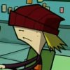 |
Major Appearances:
Quote: "Dude. Dude!
I kept my underwear on for a month once and it kind of smelled like
he does!"
Affiliation:
Skool- Ms Bitters' class
See also: |
|
See
Ms. Bitters'
seating charts, both season 1 and 2. |
|
Carnival Ride Creatures |
|
|
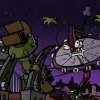 |
Major Appearances:
Mortos Der Soulstealer
Quote: none
Affiliation: The
occult, experiment
See also: Mortos |
|
While trying to prove that
he is not a mooch, Mortos demonstrates his powers by turning several
carnival rides into giant monsters which then engage in battle. |
|
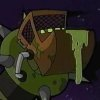
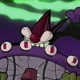 |
|
Chuck and Buck |
|
|
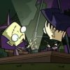 |
Major Appearances:
MegaDoomer
Quote: "I'M NOT
PLAYING WITH YOU ANYMORE!"
Affiliation:
Neighborhood
See also: |
|
Chuck and Buck are two
children who have a robot war with toy robots in a sandbox. Chuck
has a lobotomy scar. Chuck is a poor sport and quits playing after
Buck counters his missile attack with a wave pulse. GIR then runs up
and eats their toys. |
|
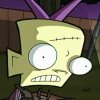
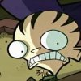 |
|
Chunk |
|
|
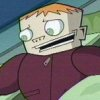 |
Major Appearances:
Quote: "I'm gonna
punch you in your wormhole!"
Affiliation:
Skool- Ms Bitters' class
See also: |
|
See
Ms. Bitters'
seating charts, both season 1 and 2. |
|
Chuy Rodriguez |
|
|
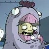 |
Major Appearances:
The Sad, Sad Tale of Chickenfoot
Quote: "My name
is... was... Chuy Rodriguez. I lived... I laughed... I loved!"
Affiliation:
Chicky Licky
See also: Eric,
Maria |
|
A former Chicky Licky
employee, he is now the horrible Chickenfoot. He is the man who
would stand in front of the restaurant in a Mr. Chicky Licky suit to
help draw in customers. One day, Eric and Maria got dirty dishwater
on the microwave while in a potato argument. The microwave sent out
deadly waves at Chuy and it made him think that he had fused with
chicken. Dib made him go to the hospital in exchange for a dirty
chicken toy from the restaurant where Dib eventually got the chicken
suit off of Chuy. |
|
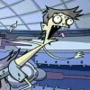 |
|
Coach Walrus |
|
|
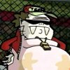 |
Major Appearances:
Vindicated!
Quote: "Your
screaming was amusing for awhile, Dib, but now you're just scary!"
Affiliation: Skool
See also: Mr. Dwicky |
|
The skool coach who
resembles a walrus, Coach Walrus sets up a bludgeon ball match
between Dib and Zim. Dib manages to knock off one of Zim's contacts,
but everyone accepts Zim's explanation of pinkeye. Due to Dib's
whining, Coach Walrus sends Dib to skool councilor Mr. Dwicky. |
|
Colonel |
|
|
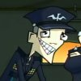 |
Major Appearances:
Hamstergeddon
Quote: "But General,
I couldn't fire a missile at that fooby little face. Could you?"
Affiliation:
Military
See also: General,
Missile Guy, Ultra-Peepi |
|
The colonel is a military
leader caught under the hypnotic cuteness of Ultra-Peepi. |
|
Computer |
|
|
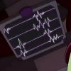 |
Major Appearances:
Quote: "Processing,
PROCESSING!"
Affiliation: Zim
See also: |
|
Zim can give commands to
the computer from anywhere in his house or Voot Cruiser, and the
computer will obey. |
|
Conventia Announcer |
|
|
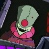 |
Major Appearances:
The Nightmare Begins -- The Frycook What Came From All That Space
Quote: "Wiggle your
antennae in salute..."
Affiliation: The
Irken Empire
See also: |
|
The Conventia Announcer is
an Irken (?) who wears a helmet and robe and broadcasts all over the
planet Conventia. He gives instructions to the Irkens going to the
great assigning. |
|
Cops |
|
|
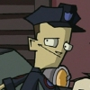 |
Major Appearances:
Attack of the Saucer Morons -- Invasion of the Idiot Dog Brain --
MegaDoomer -- Walk for your Lives
Quote: "Can
mobile homes rampage?"
Affiliation:
City Police Force
See also: Officer
Squidman, Officer |
|
One cop was forced into
driving off the road and into a Weenie Stand when ZIM flew the Voot
Cruiser at him head on. That cop later appeared arresting Iggins.
The fat cop and lobotomy cop went after the GIR-house. Lobotomy cop
later appeared trying to shoot down the MegaDoomer. The fat cop
later appeared as the cop Dib tried to walk towards in Walk for
your Lives. Other cops with larger roles are Officer Squidman
and Officer Pembrey. |
|
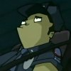
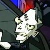 |
|
Count Cocofang |
|
|
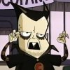 |
Major Appearances:
Career Day
Cameos: The
Halloween Spectacular of Spooky Doom
Quote: "Bleeeah! Eat
CocoSplodies!"
Affiliation:
Breakfast Cereal
See also: Bill |
|
The breakfast cereal mascot
for CocoSplodies, Count Cocofang is a cartoon vampire with one fang
and a taste for fudge. Paranormal Investigator Bill has always
suspected that the Count is an actual vampire and his suspicions
where confirmed (at least for him) when Dib accidently led him to
Buns Market, where an actor portrayed Count Cocofang. Bill persued
the Count Cocofang impersonator with a stake in his hand. |
|
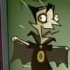 |
|
Countess Von
Verminstrasser |
|
|
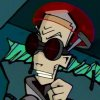 |
Major Appearances:
Lice
Quote: "You can't
see the full extent of the problem! It's much bigger than you know!"
Affiliation: Skool
See also: Delousing
Assistants |
|
Ms. Bitters summons the
Countess to get rid of the lice. She is a professional delouser and
she quarantines the entire skool. During her stay, she finds
evidence that supports her theory that lice come from a lice queen.
She finds the lice queen and uses Zim's skin (in liquid form) to
wipe out the hive. |
|
Crystal |
|
|
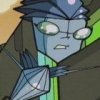 |
Major Appearances:
Hobo 13
Quote: "Curse you,
Zim!"
Affiliation: Space-
Hobo 13
See also: Sergeant
Hobo 678 |
|
This Hobo 13 squad member
is an alien made out of crystals. During the laser trench run, Zim
reprogrammed the lasers to lock on her so that the rest of the team
could get through. She almost made it through, but got eliminated in
the last stretch. |
|
Cutest Kid |
|
|
|
Major Appearances:
The Most Horrible X-Mas Ever
Quote: "But, Mr.
Santa? Before I go to my doom... can I have a hug?"
Affiliation:
Neighborhood
See also: |
|
An excruciatingly cute
child asks for a hug from Zim, causing his Santa suit to take over.
The suit picks up the child but then throws it by accident. |
|
Cyborg Squirrels |
|
|
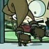 |
Major Appearances:
Tak: The Hideous New Girl -- The Girl Who Cried Gnome
Quote: none
Affiliation:
Experiment
See also: Robot
Gopher |
|
Aparently an experiment of
Zim's due to their presence in his lab in The Girl Who Cried
Gnome, these squirrels first appeared in the very beginning of
Tak, the Hideous New Girl dancing on the window seal as Dib
watches in terror. |
|
Cyborg Zombie Soldiers |
|
|
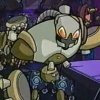 |
Major Appearances:
Zim Eats Waffles
Quote: none
Affiliation: Giant
Flesh-Eating Demon Squid
See also: Giant
Flesh-Eating Demon Squid |
|
Zim's rampant squid
experiment assaults Zim with an army of robots at its disposal. Zim
fights back the squid and its minions with a scepter-like device.
The cyborg soldiers later storm into Dib's room and crush his
equipment. |